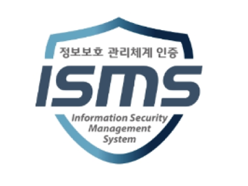

정보보호,우리의 핵심가치이자
고객과의 약속입니다.

SK텔레콤은 고객안심을 최우선에 두고,
책임있고 투명한 실행을 통해 고객과 사회가 신뢰할 수 있는
정보보호 체계를 만들어갑니다.
SK텔레콤은 전사 관점의 위험 관리를 위해 CEO 직속의 CISO 및 CPO 체계하고, 경영진과 이사회에 직접 보고하는 투명한 거버넌스를 확립했습니다.
CISO (정보보호‧기술적 보호)와 CPO(개인정보보호 정책‧컴플라이언스) 는 각 영역을 전담하는 동시에, 서비스 기획부터 운영‧침해 대응에 이르기까지 전 과정을 함께 검증하며 긴밀하게 협력하고 있습니다.
모든 임직원이 같은 기준으로 보안 활동을 수행하기 위해 명확한 정책과 절차가 필요합니다. SK텔레콤은 국제 정보보호 표준(ISO/IEC 27002)을 바탕으로 보안 정책을 재정비하여, 실행 - 검증 - 개선의 선순환 구조로 운영합니다.
사이버 위협이 정교해지고 서비스 환경이 빠르게 변화할수록 정보보호 역량에 대한 지속적인 투자는 필수적입니다. SK텔레콤은 5년간 약 7,000억 원 규모의 재원을 집중 투자하여 보안 아키텍처 ∙ 운영·대응 역량 ∙ 고객 보호 세 영역을 강화해 나아갑니다.
가장 강력한 보안은 기술을 넘어, 이를 실천하는 ‘사람’으로부터 시작됩니다. SK텔레콤은 정보보안과 개인정보보호를 전 임직원이 함께 실천해야 하는 기본 원칙으로 정착시키고자, Security First, Privacy First 문화를 지속적으로 확산해 나가고 있습니다.
업무 전반에 적용되는 Privacy by Design과 6대 보안 실천 지침 준수, 지속적인 임직원 역량 강화와 실전 같은 모의훈련까지 — 우리는 타협 없는 최우선 보안 원칙을 일상에서 실천하고 있습니다.
정보보호 체계는 구축하는 것만큼, 지속적으로 점검하고 개선하는 것이 중요합니다. SK텔레콤은 정보보호 인증, 주요 인프라 평가, 대내외 감사와 자체점검을 통해 관리 수준을 객관적으로 확인합니다.
정보보호 아키텍쳐
신뢰하지 않고,
항상 검증합니다.
‘그 어떤 사용자나 시스템도 신뢰하지 않고 매 순간 검증한다’는 제로 트러스트(Zero Trust) 원칙을 기반으로,
식별 - 보호 - 탐지 - 대응 - 복구의 5단계가 하나의 흐름으로 작동하는 SK텔레콤의 보안 아키텍처를 정의합니다.
서버 및 SW 보안 가시성 확보
보호 대상의 가시성 확보가 보안의 출발점입니다.
통신 서비스는 네트워크 ‧ 시스템 ‧ 데이터 ‧ 고객 접점이 복합적으로 연결되어 있어, 보호 대상의 정확한 식별이 보안의 출발점입니다. SK텔레콤은 자산 식별과 위험평가 프로세스를 운영하고 이를 뒷받침할 자동화 기반의 자산관리 시스템을 단계적으로 구축하고 있으며, 공급망 보안관리를 통해 외부 요인으로 인한 보안 위험을 줄이고 있습니다.
- 자동화 기반 자산관리 시스템
- 식별 ‧ 위험도 평가 ‧ 개선조치 연계
- 공급업체 보안역량 평가
- SW 구성요소 취약점 관리
다중방어체계
핵심 자산은 겹겹이 보호합니다.
보호 대상이 식별되면 필요한 사람과 시스템만 적절한 권한으로 접근하도록 통제하여, 혹시 모를 위험이 안으로 확산되지 않도록 예방합니다.SK텔레콤은 통합 계정 권한 관리, 네트워크 접근 통제, 중요정보 보호, 개발 단계 보안관리를 연계하여 보호 수준을 강화합니다.
- 사고 인지 ‧ 시스템 취약점 예방
- 계정 ‧ 권한 관리, 인증 ‧ 접근 통제
- 네트워크 보안 (침입 차단 ‧ 횡적 이동 최소화)
- 데이터 보호 (암호화 ‧ 분류)
AI 기반 위협 탐지
AI로 먼저 탐지하고, 한발 앞서 대응합니다.
SK텔레콤은 다양한 보안 정보를 통합하고, AI 기반 보안위협 탐지·분석 체계를 통해, 정상 활동으로 위장한 위협까지 조기에 식별하고 차단하여 피해를 방지합니다. 전사 사용자·PC·서버·네트워크·서비스에서 발생하는 이벤트 정보를 한곳에 모으고, AI를 활용하여 이상행위를 분석한 후 식별된 위협에 대해서 방어를 적용하는 3단계 탐지 대응 체계를 운영합니다.
- 보안 정보 통합 수집
- 계정 ‧ 권한 관리, 인증 ‧ 접근 통제
- 네트워크 보안 (침입 차단 ‧ 횡적 이동 최소화)
- 데이터 보호 (암호화 ‧ 분류)
사고 대응 절차 표준화
위기상황에서 빠르고 정확하게 대응하여 영향을 최소화합니다.
사고 대응의 핵심은 신속하고 일관된 실행 체계를 확보하는 데 있습니다. SK텔레콤은 사고 유형별 표준 대응 절차와 단계별 실행 방안을 마련하여 신속하고 일관된 대응을 수행합니다.
- 사고 인지
- 확산 방지
- 사고 분석 ‧ 포렌식
- 보고 ‧ 신고
- 복구 ‧ 정상화
침해 사고 복구
비스 연속성을 보장하도록 회복탄력성을 확보합니다.
통신은 고객의 통화‧문자‧데이터를 넘어 금융‧인증‧공공‧산업 서비스와 긴밀히 연결된 사회적 인프라입니다. SK텔레콤은 서비스 중요도에 따라 복구 기준을 체계화하고, 다중 백업‧재해복구‧정기 훈련을 유기적으로 연계하여 어떤 상황에서도 흔들리지 않는 회복 탄력성을 확보하고자 합니다.
- 재해복구 체계
- 다중 백업체계
- 정기 복구훈련
기술
변화하는 위협보다 한발 앞서갑니다.
보안기술은 단순한 도입을 넘어, 변화하는 위협에 신속하게 대응하기 위해 지속적으로 내재화 ‧ 고도화되어야합니다. SK텔레콤은 인증 보안과 AI 기반 AX 위협 대응 기술을 강화하여 고객 보호 중심의 보안 체계를 발전시키고 있습니다.
- Passwordless 시스템 추진
- 통합신원관리체계
- 생성형 AI 보안 엔진 개발
정보보호 관리 수준을 객관적으로 검증합니다
정보보호 체계는 구축하는 것만큼 지속적으로 점검하고 개선하는 것이 중요합니다.
SK텔레콤은 정보보호 인증 ∙ 주요 인프라 평가 ∙ 대내외 감사와 자체 점검을 통해 관리 수준을 객관적으로 확인하고 있습니다.
대외 인증
-

ISMS
정보보호
관리체계 인증 -

ISMS-P
정보보호 및 개인정보보호
관리체계 인증
점검
-
주요정보통신기반시설 점검
중요 정보시스템의
기술적·관리적·물리적
보안 점검 -
5G 협의회 이동사 기지국 점검
기지국 보안 점검 -
위치정보 관리실태 점검
위치정보의 보호 및
이용 등에 관한 법률
준수 점검 -
자체 보안 점검
정기·비정기적
내부 점검 활동 -
외부 감사
전사 차원의
외부 점검
고객 신뢰를 위한 지속적인 약속
위협은 끊임없이 달라지고 서비스 환경도 빠르게 진화합니다. 그렇기에 우리가 만든 보안 체계는 ‘완료’가 아니라, ‘계속되는 약속’ 이어야 합니다.
SK텔레콤은 단단한 보안 체계와 실행력을 바탕으로 다음의 세 가지 약속을 흔들림 없이 지키며, 고객과 사회가 신뢰할 수 있는 정보보호 체계를 만들겠습니다.
-
PROMISE 01
고객 안심 우선
보안 의사결정의 기준은 항상 고객의
안심입니다. 고객이 안전하게 통신 서비스를
이용할 수 있는 환경을 끝까지 지키겠습니다. -
PROMISE 02
책임있는 실행
변화하는 위협에 대응할 수 있도록 보안
기술과 운영 역량을 꾸준히 강화하며, 일회성이
아닌 지속 가능한 실행을 약속합니다. -
PROMISE 03
신뢰를 위한 소통
개선의 과정과 결과를 성실히 설명하고,
고객 신뢰를 높이는 소통을
이어가겠습니다.
외부의 시선으로,한 번 더 점검 받습니다.
아무리 튼튼한 장벽도 안에서만 바라보면 빈틈을 놓칠 수 있습니다.
SK텔레콤은 외부 보안 전문가들의 눈을 통해 서비스를 끊임없이 검증하고, 사소한 취약점까지 찾아내어 더 완벽한 안심을 만들어갑니다.